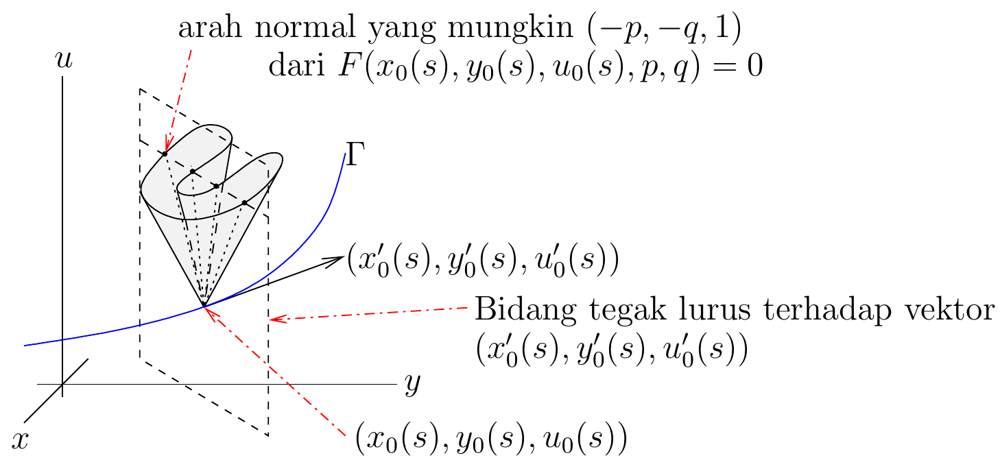

Tentang batas ini. Batas kumulatif besar ini
menuntaskan bagian Solusi yang Dihasilkan sebagai Selubung sampai baris
2184 sumber beku. Isinya mencakup integral lengkap, konstruksi selubung
untuk masalah Cauchy, syarat lokal Teorema Fungsi Implisit, empat
contoh, dan satu gambar bersumber terverifikasi.
Sebelum membahas pokok bagian ini, kita tinjau kembali apa yang telah
kita ketahui tentang selubung suatu keluarga permukaan integral.
Misalkan
mendeskripsikan suatu keluarga satu-parameter permukaan integral untuk
Persamaan
(1.3.1). Selain itu, kita asumsikan bahwa selubungnya
diberikan oleh
untuk suatu fungsi
.
Untuk setiap titik
,
berdasarkan Catatan 1.2.1,
bidang singgung pada selubung
di
juga merupakan bidang singgung pada permukaan integral yang diberikan
oleh
di
,
dengan
.
Selain itu, jika
,
maka
berdasarkan Catatan 1.2.1.
Dengan demikian,
Karena
sebarang, kita memperoleh bahwa selubung suatu keluarga permukaan
integral untuk (1.3.1)
juga merupakan permukaan integral untuk (1.3.1).
Sekarang kita jelaskan cara menemukan permukaan integral dari (1.3.1)
yang memuat suatu kurva tertentu
sebagai selubung suatu keluarga permukaan integral dari (1.3.1).
Pertama-tama, kita memerlukan metode untuk menemukan keluarga permukaan
integral yang tepat.
Suatu integral lengkap
dari (1.3.1)
adalah keluarga dua-parameter permukaan
(1.4.1)
yang memenuhi (1.3.1)
dan sedemikian sehingga pemetaan
(1.4.2) berperingkat
untuk semua
.
Hal ini menyiratkan bahwa parameter
dan
saling bebas (yakni tidak ada relasi fungsional di antara keduanya).
Tidak ada metode mudah untuk menemukan integral lengkap.
Jika diberikan suatu integral lengkap seperti (1.4.1)
untuk persamaan diferensial parsial (1.3.1),
kita dapat mendefinisikan banyak subkeluarga satu-parameter permukaan
integral. Misalkan
dengan
,
mendeskripsikan suatu subkeluarga satu-parameter permukaan integral.
Jelaslah bahwa
jika
,
dan
untuk semua
.
Selubung subkeluarga permukaan integral ini diperoleh dari dengan menyelesaikan sistem tersebut terhadap
sebagai fungsi dari
dan
.
Integral lengkap dapat digunakan untuk menemukan suatu permukaan
integral yang memuat kurva
untuk suatu interval terbuka
.
Langkah pertama ialah mengekstraksi dari integral lengkap tersebut suatu
keluarga satu-parameter permukaan integral yang didefinisikan oleh
sedemikian sehingga
untuk
.
Jika persamaan selubung dapat diselesaikan secara lokal dan reguler
sebagai
,
selubung keluarga satu-parameter permukaan integral ini merupakan
permukaan integral yang memuat kurva
.
Dengan kata lain, mula-mula kita mencari suatu kurva
sedemikian sehingga
(1.4.3)
dan
(1.4.4)
untuk
,
lalu menggunakan
(1.4.5)
dan
(1.4.6)
untuk menemukan selubung subkeluarga permukaan yang dideskripsikan oleh
yang akan memuat
.
Kesimpulan ini bersifat lokal. Persamaan (1.4.6)
harus benar-benar dapat diselesaikan sebagai
;
sebagai contoh, Teorema Fungsi Implisit berlaku bila
cukup mulus dan turunan kedua terhadap parameter keluarga,
,
tak nol pada titik kontak. Tanpa syarat regularitas semacam itu, (1.4.5)–(1.4.6)
dapat mendeskripsikan himpunan singular, bukan grafik suatu permukaan
integral.
Untuk membuktikan bahwa setiap titik
terletak pada selubung keluarga permukaan integral yang diberikan oleh
untuk
,
kita perhatikan bahwa
untuk
suatu
.
Dari (1.4.3)
diperoleh
Jadi, (1.4.5)
dipenuhi oleh
dan
.
Jika kita menurunkan (1.4.3)
terhadap
,
maka diperoleh
di mana (1.4.4)
telah digunakan untuk memperoleh kesamaan kedua. Jadi, untuk
,
kita memperoleh
Dengan demikian, (1.4.6)
dipenuhi oleh
dan
.
Catatan 1.4.1. Keluarga satu-parameter permukaan
yang didefinisikan oleh (1.4.3)
dan (1.4.4)
memenuhi
dan
untuk
.
Secara khusus, jika
dan
,
maka Persamaan terakhir menyatakan bahwa arah normal
dari bidang singgung pada permukaan integral dari (1.3.1)
di sepanjang kurva
tegak lurus terhadap arah singgung
di sepanjang
.
Oleh karena itu, nilai-nilai yang mungkin bagi
dan
diberikan oleh perpotongan bidang yang tegak lurus terhadap
dengan “kerucut” yang dibentuk oleh vektor
yang memenuhi
seperti ditunjukkan pada Gambar 1.6.
Pada Gambar 1.6,
kerucut dan bidang tegak lurus tersebut telah ditranslasikan dari titik
asal ke
.

Bidang-bidang singgung awal yang mungkin
pada permukaan integral untuk masalah Cauchy umum, dengan empat arah
normal yang mungkin ditandai tebal.
Catatan 1.4.2. Jika diberikan suatu integral lengkap
dan kurva
yang didefinisikan oleh
dengan
suatu interval terbuka, perhatikan pemetaan
Misalkan
merupakan
solusi dari
(1.4.7)
Persamaan dalam (1.4.7)
ekuivalen dengan sistem yang terdiri atas persamaan-persamaan dalam (1.4.3)
dan (1.4.4).
Sekarang kita buktikan bahwa terdapat suatu kurva terdiferensialkan
yang didefinisikan untuk
dalam suatu lingkungan
dari
sedemikian sehingga
dan
(1.4.8)
untuk
.
Dengan demikian,
memenuhi (1.4.3)
dan (1.4.4)
untuk
.
Syarat peringkat
pada (1.4.2)
saja belum menjamin nondegenerasi yang diperlukan di sini. Kita
tambahkan hipotesis lokal bahwa determinan berikut tak nol pada
:
di mana
dan turunan-turunannya dievaluasi di
,
sedangkan
dan
dievaluasi di
.
Hipotesis tambahan ini memang diperlukan: peringkat
hanya menjamin bahwa sekurang-kurangnya satu dari tiga minor
pemetaan dalam (1.4.2)
tak nol, dan kombinasi dua minor yang tampil pada determinan di atas
masih dapat saling meniadakan. Selanjutnya, berdasarkan Teorema Fungsi
Implisit, terdapat suatu kurva terdiferensialkan tunggal
,
yang didefinisikan dalam suatu lingkungan terbuka
dari
,
sedemikian sehingga (1.4.8)
dipenuhi, dan
,
sebagaimana yang diharapkan.
Contoh 1.4.3. Tentukan integral lengkap dari
(1.4.9) Fungsi
untuk semua
dan
memenuhi (1.4.9)
dan syarat
.
Apakah terdapat solusi taktrivial dari (1.4.9)
yang memenuhi
?
Gunakan integral lengkap tersebut untuk menemukan solusi taktrivial
dari (1.4.9)
yang memenuhi
.
Untuk menemukan integral lengkap, kita menggunakan metode pemisahan
variabel. Jika kita substitusikan
ke dalam (1.4.9),
diperoleh
.
Jika kedua ruas dibagi dengan
,
diperoleh
.
Jadi,
.
Karena ruas kanan tidak bergantung pada
dan ruas kiri tidak bergantung pada
,
haruslah
,
dengan
suatu konstanta. Kita memperoleh dua persamaan diferensial biasa orde
pertama:
dan
.
Solusi umumnya adalah
dan
.
Oleh karena itu,
untuk
dan
.
Fungsi
merupakan integral lengkap karena
Dengan
demikian, pemetaan yang didefinisikan dalam (1.4.2)
berperingkat
.
Untuk menemukan solusi taktrivial
dari (1.4.9)
yang memenuhi
,
mula-mula kita mencari keluarga permukaan integral yang menyinggung
kurva
yang didefinisikan oleh
,
,
dan
untuk
.
Keluarga ini didefinisikan oleh sistem persamaan
yang diperoleh dari (1.4.3)
dan (1.4.4).
Kita memperoleh
dan
.
Keluarga satu-parameter permukaan integral yang kita cari diberikan oleh
Selubung keluarga permukaan integral ini diberikan oleh sistem persamaan
yang diperoleh dari (1.2.1) dan
(1.2.2).
Dari persamaan kedua, kita memperoleh
.
Jika nilai
ini disubstitusikan ke dalam persamaan pertama, diperoleh permukaan
integral yang dicari,
yang memuat
.
Seperti diperlihatkan oleh dua contoh berikut, metode pemisahan variabel
tidak selalu menghasilkan integral lengkap.
Contoh 1.4.4. Gunakan metode pemisahan variabel
untuk mencari solusi dari
dan tentukan mengapa keluarga dua-parameter yang diperoleh bukan
integral lengkap bila seluruh bidang parameter
disertakan.
Misalkan
.
Kita memperoleh
.
Jika kedua ruas kesamaan ini dibagi dengan
,
lalu fungsi-fungsi yang bergantung pada
dikumpulkan di satu ruas dan yang bergantung pada
di ruas lainnya, kita memperoleh
untuk semua
dan
sedemikian sehingga
dan
.
Karena ruas kanan tidak bergantung pada
dan ruas kiri tidak bergantung pada
,
harus berlaku
dengan
suatu konstanta. Kita memperoleh dua persamaan diferensial biasa orde
pertama,
dan
,
yang solusi umumnya masing-masing adalah
dan
.
Salah satu solusinya adalah
,
dengan
.
Determinan yang hanya memakai baris
dan
memang nol, tetapi itu belum membuktikan bahwa pemetaan dalam (1.4.2)
berperingkat kurang dari
.
Minor yang memakai
dan
justru memberikan
Jadi pemetaan
tersebut berperingkat
untuk
,
tetapi hanya berperingkat
pada
.
Karena itu, keluarga dengan seluruh
bukan integral lengkap. Pada masing-masing daerah parameter
atau
,
keluarga ini menjadi integral lengkap; ekuivalen, kita dapat memakai
parameter
.
Contoh 1.4.5. Gunakan metode pemisahan variabel
untuk mencari solusi dari
dan tentukan mengapa keluarga dua-parameter yang diperoleh bukan
integral lengkap bila nilai parameter
disertakan.
Kerjakan pada satu kuadran terhubung, sehingga
dan
tidak nol dan semua fungsi yang diturunkan tetap mulus. Misalkan
.
Kita memperoleh
.
Jika kedua ruas kesamaan ini dibagi dengan
,
lalu fungsi-fungsi yang bergantung pada
dikumpulkan di satu ruas dan yang bergantung pada
di ruas lainnya, kita memperoleh
untuk semua
dan
sedemikian sehingga
dan
.
Karena ruas kanan tidak bergantung pada
dan ruas kiri tidak bergantung pada
,
harus berlaku
dengan
suatu konstanta. Kita memperoleh dua persamaan diferensial biasa orde
pertama dengan bentuk yang sama:
dan
.
Jika kita meninjau persamaan diferensial pertama, kita dapat menuliskan
Mengintegralkan kedua ruas terhadap
memberikan
untuk suatu konstanta
.
Dengan demikian,
,
dengan
.
Kita juga dapat mengambil
untuk memperoleh solusi trivial
untuk semua
dan
.
Demikian pula,
.
Salah satu solusinya adalah
,
dengan
.
Pada suatu kuadran, tulis
.
Seperti pada contoh sebelumnya, determinan yang hanya memakai
dan
bernilai nol, tetapi minor itu tidak menentukan peringkat seluruh
pemetaan. Minor yang memakai
dan
adalah
Dengan
demikian, pada setiap kuadran pemetaan dalam (1.4.2)
berperingkat
untuk
,
tetapi berperingkat
pada
.
Keluarga pada seluruh bidang parameter karena itu bukan integral
lengkap; pembatasan ke
atau
,
atau parameterisasi
,
menghasilkan integral lengkap pada kuadran tersebut. Sumbu koordinat
tidak termasuk dalam domain klasik ini karena
umumnya tidak terdiferensialkan di sana.
Contoh 1.4.6. Kita meninjau kembali persamaan
eikonal dari Contoh 1.3.9
dengan bekal pengetahuan kita tentang selubung dan integral lengkap.
Keluarga permukaan integral untuk persamaan eikonal yang diberikan oleh
merupakan integral lengkap karena
merupakan pemetaan
berperingkat
untuk semua
.
Memang, matriks
berperingkat
karena sekurang-kurangnya salah satu dari kedua determinan
dan
tak nol untuk semua
.
Seperti pada Contoh 1.3.9,
kita meninjau masalah Cauchy dengan kurva
,
dengan
,
dan
untuk
.
Subkeluarga permukaan yang diperoleh dari integral lengkap di atas
dengan
dan
untuk semua
merupakan keluarga permukaan integral berparameter satu yang diperlukan
untuk mencari permukaan integral yang memuat
dengan menggunakan selubung keluarga ini. Untuk memverifikasinya,
perhatikan bahwa
dan
untuk semua
.
Selubung keluarga permukaan integral ini diberikan oleh
persamaan-persamaan
(1.4.10)
dan
(1.4.11)(1.4.11)
menyatakan bahwa arah
sejajar dengan
.
Untuk
,
cabang selubung yang memuat
memenuhi
dan
.
Jika nilai-nilai
dan
ini disubstitusikan ke dalam (1.4.10),
kita memperoleh
Ini merupakan
salah satu permukaan integral yang kita temukan dalam Contoh 1.3.9.
Permukaan integral lainnya diperoleh dari subkeluarga berbeda
dan
untuk semua
;
perhitungan selubung yang sama memberikan
.
Kedua solusi radial ini ditinjau pada domain yang tidak memuat titik
asal karena tidak terdiferensialkan di sana.
Atribusi dan hak. Karya sumber oleh Benoit Dionne
dilisensikan berdasarkan Creative
Commons Attribution-NonCommercial-ShareAlike 4.0 International.
Terjemahan dan perubahan yang dicatat menggunakan lisensi komponen yang
sama. Produksi terjemahan dan edisi dibantu OpenAI Codex gpt-5.6-sol,
Ultra; semua kredit penulis dan kontributor manusia tetap dipertahankan.
Ini bukan terbitan atau dukungan resmi Benoit Dionne maupun University
of Ottawa.